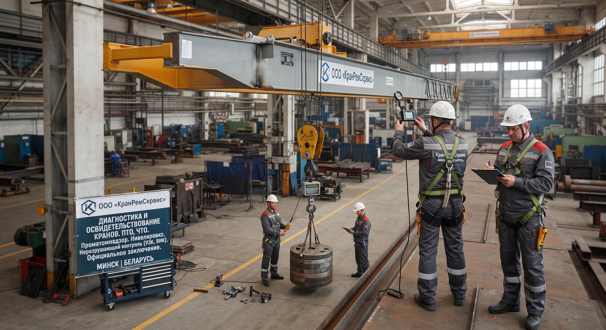

ООО «КранРемСервис» проводит полное (ПТО), частичное (ЧТО) и внеочередное техническое освидетельствование кранов всех типов.
Выполняем нивелировку путей, статические и динамические испытания, контроль (УЗК, ВИК) и оценку остаточного ресурса. По итогам — официальное заключение.

Сроки и порядок проведения освидетельствования строго регламентированы правилами Проматомнадзора. Мы проводим все установленные законом виды проверок.
Частичное техническое освидетельствование. Проводится не реже 1 раза в 12 месяцев.
* Испытания грузом не проводятся.
Полное техническое освидетельствование. Проводится не реже 1 раза в 3 года, а для редко используемых кранов — раз в 5 лет.
* Обязательно испытание грузами.
Проводится после капитального ремонта, реконструкции, замены несущих узлов, аварий или окончания нормативного срока службы крана.
* Выдача экспертного заключения.
Изучаем паспорт крана, журналы эксплуатации и технического обслуживания, акты предыдущих ПТО/ЧТО и ремонтов. Составляем программу обследования.
Наши эксперты выезжают на объект. Проводят визуальный и инструментальный (УЗК, ВИК, нивелировка) контроль узлов, механизмов и путей.
При проведении ПТО выполняются статические и динамические испытания крана аттестованными контрольными грузами, проверяется работа тормозов и ОГП.
По итогам диагностики мы вносим запись в паспорт крана, составляем акт освидетельствования (или ведомость дефектов при выявлении брака), разрешающий дальнейшую эксплуатацию.
Заполните форму — мы свяжемся с вами, уточним детали и подготовим смету. Ответим в течение 1 рабочего дня.